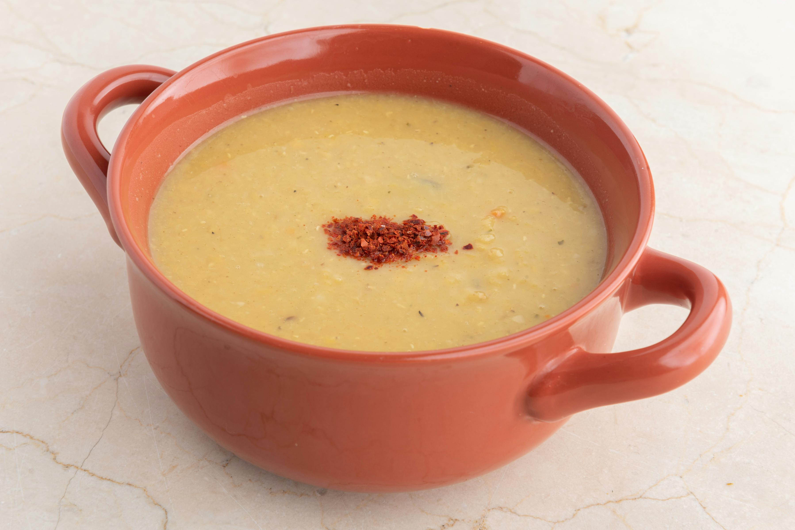

Tomato & Lentil Soup

Recipe for a Yummy Tomato & Lentil soup
This is a recipe for an easy, substantial tomato soup with lentils.
It will take around 40mins, it's tasty and it's even better a day later.
Ingredients
- 2 tins of chopped tomatoes
- 2 vegetable stock cubes
- Tomato puree ~2tbsp, or more to taste
- 1/2 tsp dried basil
- 1/2 tsp dried italian herbs
- 1/4 pack of lentils
- Half large onion, or 1 small onion cut into wedges
- Optional: tsp or 2 of sugar if tomatoes are too tart
- Pinch of dried chilli flakes
- 4 tbsp butter
Steps
- Melt butter in medium-large pot & sweat onions for 5 mins
- Add 3 cups cold water, stock cubes, chopped tomatoes, tomato puree, lentils(washed and drained), and salt & pepper
- Once boiling, turn heat down a notch or two and simmer for 40mins, stirring occasionally
- Take off heat and blitz with blender until to desired consistency
- Season to taste, & serve.
- Once cool enough, decant soup to Tupperware and store in fridge for a couple of days
Home